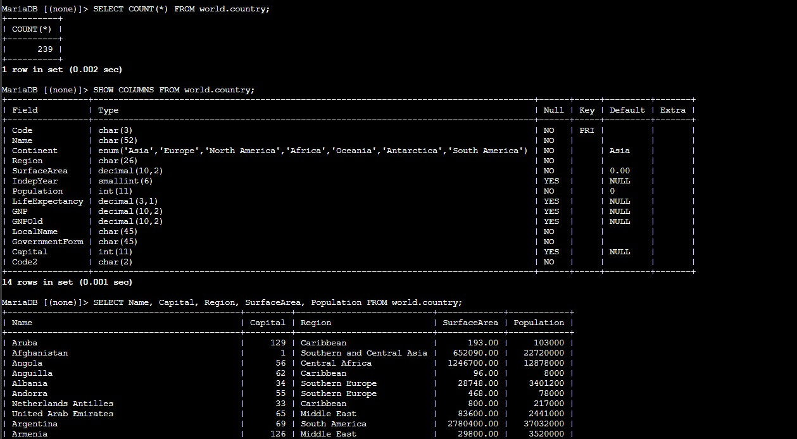
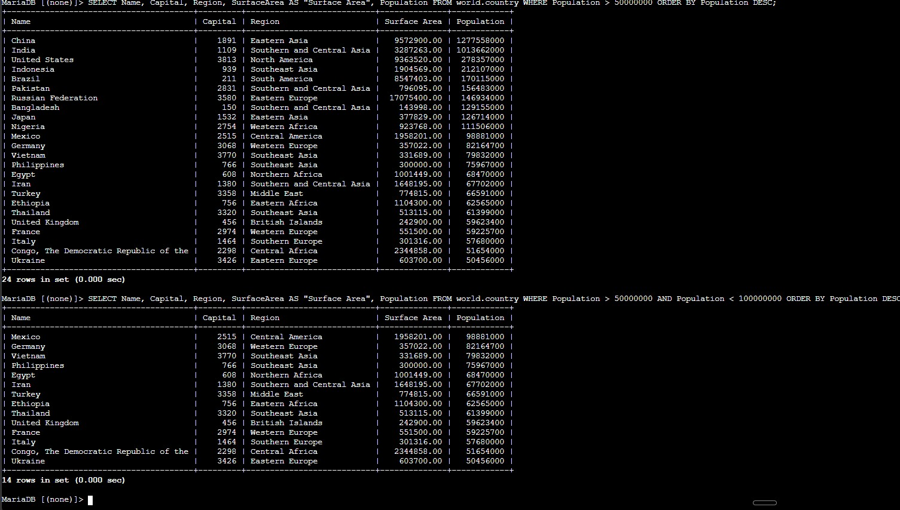
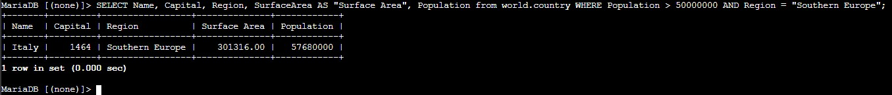

Schema Inspection
Started with broad queries to understand how many rows existed and which columns were available in the table.
This lab focuses on reading data instead of changing it. The work starts with broad result sets and gradually narrows them using COUNT(*), aliases, ordering, and filtered conditions in the WHERE clause.
Connected to the world database, queried full and partial result sets from world.country, counted rows with COUNT(*), renamed columns with AS, sorted by population, and solved a final challenge with combined WHERE conditions.
Started with broad queries to understand how many rows existed and which columns were available in the table.
Used aliases and ascending or descending ordering to make the output easier to read.
Applied numeric and text conditions to answer a concrete question about Southern Europe.
The queries move from general exploration to targeted filtering, which is the normal progression when analyzing a dataset.
mysql -u root --password='re:St@rt!9'.SHOW DATABASES; to confirm that the world database was available before starting the query exercises.SELECT * FROM world.country; to view the raw dataset.SELECT COUNT(*) FROM world.country; and checked the table definition with SHOW COLUMNS FROM world.country;.SELECT Name, Capital, Region, SurfaceArea, Population FROM world.country;.
SurfaceArea with the alias AS "Surface Area" to make the output easier to read.ORDER BY Population and then reversed the order with ORDER BY Population DESC.WHERE Population > 50000000 to focus on larger countries.AND Population < 100000000 to narrow the results to a more specific range.
WHERE and AND to keep only the rows that satisfy both conditions.WHERE Population > 50000000 AND Region = "Southern Europe" to combine the numeric and text filters in one statement.
Main read-only statements and operators used to inspect, sort, and filter the dataset.
SELECT * FROM world.country;Returns every column and every row in the table.
SELECT COUNT(*) FROM world.country;Counts the total number of rows in the table.
SHOW COLUMNS FROM world.country;Lists the schema so you can see which columns are available for selection or filtering.
SELECT Name, Capital, Region, SurfaceArea, Population FROM world.country;Returns only the selected columns instead of the full table.
ORDER BY Population DESCSorts the result set by population in descending order.
WHERE Population > 50000000Keeps only rows that match the numeric condition.
WHERE Population > 50000000 AND Region = "Southern Europe"Combines two conditions so the result answers a much more specific question.
COUNT(*) is a quick way to measure table size before doing more detailed analysis.SELECT * all the time.WHERE, ORDER BY, and AND turn a general query into a precise answer to a real question.This lab showed that querying is not only about retrieving rows. It is about shaping the output so that it becomes useful for decision-making or validation.
The final challenge made that point clear. Instead of scanning the full table manually, a well-constructed SELECT statement narrowed the dataset to one answer with a clear and repeatable condition set.